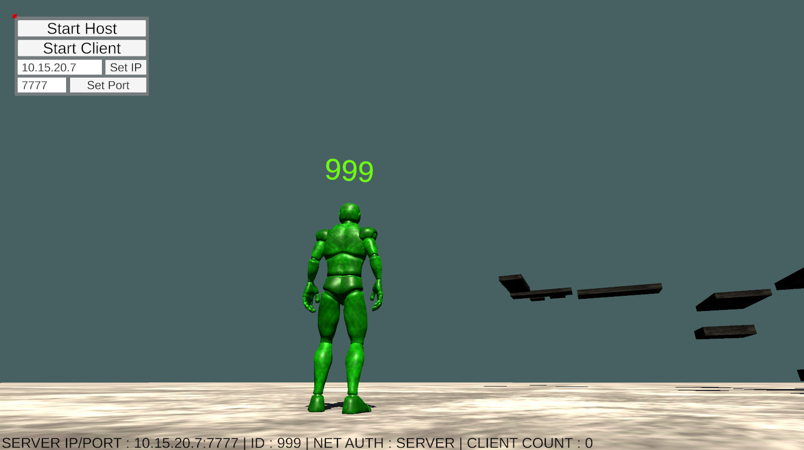

EzLAN [C++, WinSock2, Unity]
EzLAN is a networking plugin for Unity, written in C++ utilizing Winsock2 and multithreading capabilities. Available as a Unity Package, EzLAN provides a simple yet effecient local networking solution for Unity GameObjects.
Developer
Nathan Hillger

EzLAN is a networking plugin for Unity, written in C++ utilizing Winsock2 and multithreading capabilities. Available as a Unity Package, EzLAN provides a simple yet effecient local networking solution for Unity GameObjects.
EzLAN comes with a Unity demo that demonstrates how to interface with the networking backend. Capabilities for setting the target IP and port are available, to make testing across multiple systems easier.